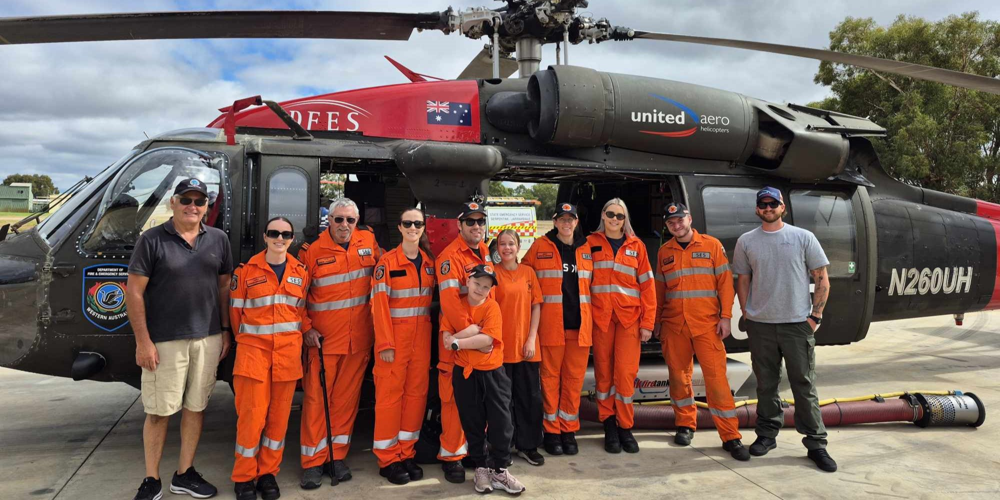

Current Conditions – Local Area
Temperature
Loading…°C
Feels like --°C
Wind
Loading…
Gusts --
Rainfall
Loading…
Chance today --
Fire Danger
Loading…
Current level
Site: Loading…
District: Loading…
Last updated: Loading…
SES Advisory – Serpentine Jarrahdale
This is a general preparedness message only. Always follow official advice from DFES, BOM and emergency services.
Current Warnings – Western Australia
- Loading warnings…
For full details, visit BOM WA Warnings and Emergency WA .
About Serpentine Jarrahdale SES
Serpentine Jarrahdale SES is a volunteer emergency service unit supporting the local community during storms, floods, searches and other emergencies.
Our dedicated volunteers are trained and ready to respond to emergency situations and help protect our community.
Interested in volunteering or training? Contact your local SES through DFES or your local council.

Training & Recruitment
Training Night Calendar
Join us for regular training sessions. Scan the QR code to view our calendar.
Join the SES
Become part of our volunteer team and make a difference in your community.